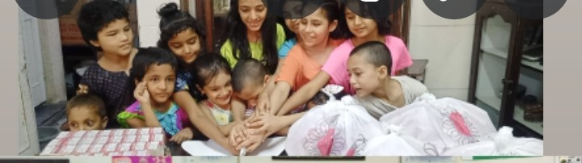
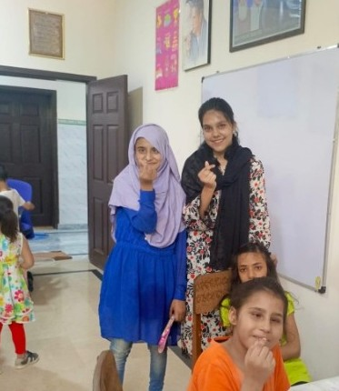

Campus Involvement & Community Engagement

Orphanage Visit Volunteer
Social outreach initiative at Edhi Center

GirlUp STEM Participant
Active member promoting women in technology

BOWLD International Conference
Women's Day 2025 Participant
Details of My Wholesome Experiences
Orphanage Visit: Al-Ummat Foundation


Driven by the belief that Ramadan is a time for shared blessings, my group of class fellows and I organized an Iftar program for the children at the Al-Ummat Foundation. We aimed to provide more than just a meal—we wanted to create a lasting memory.
We mobilized our network to collect donations, allowing us to curate specialized "goody bags" filled with toys and gifts. The goal was to ensure the festive spirit of the month reached every child personally.
The image of those innocent faces is something I will never forget. Beyond the logistics of fundraising and packing bags, the real value lay in the smiles shared at sunset. This initiative reinforced the importance of empathy-driven leadership and the profound impact of intentional kindness.
Orphanage Visit: Edhi Center, I-8 (Islamabad)




In partnership with the NGO Chin for Change, I led a group initiative to support the residents of the Edhi Center in I-8. Our goal was to move beyond traditional charity and focus on high-impact social interaction and emotional connection.
This visit was more than just a volunteer project; it was a profound personal milestone. Witnessing the resilience of the children and the dedication of the staff was incredibly humbling. It remains one of the best and most eye-opening experiences I’ve ever had, teaching me that the most valuable thing we can give is our genuine presence.